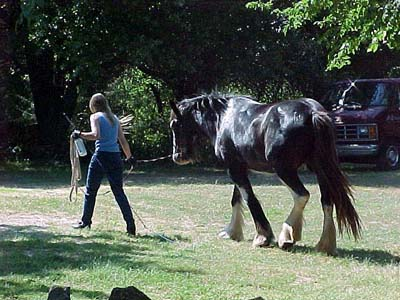
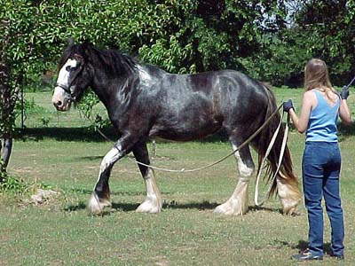
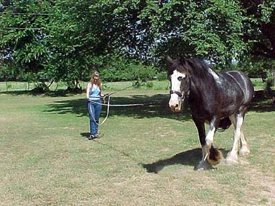
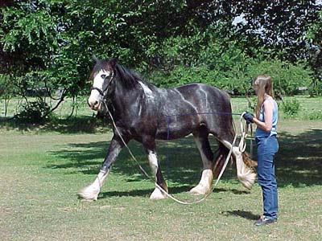
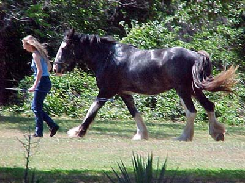
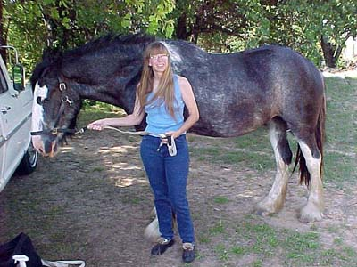
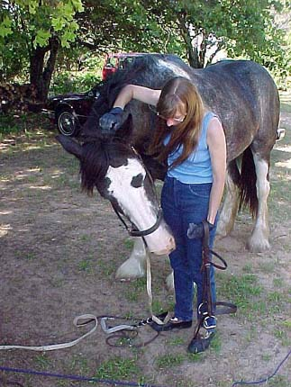

Hopefully I'll be bringing her home
next week. She's just turned three and it's time to start some serious
training.

I like this shot, because it looks
like the old Breyer Shire mold pose.

I had planned on lunging with the
surcingle, but the girth I grabbed was too long. As it was, the cavesson
was too small and wouldn't go around her nose. At least the larger bit
I bought last week seemed to fit.

We've lunged a couple of times, and
today whoa and trot came pretty readily. I could tell that after 5 minutes
she was getting bored, but I was able to keep her attention for a couple
more minutes, so that it was my idea to finish.

She's got a lot to learn, but it wasn't
too hard to keep her focused on me, even with kids splashing in the swimming
pool near us.

I think she might stay roan. Her summer
coat is darker than her winter one.

I'm 5'6 1/2", so she's about 16.3.
I guess she could get another inch, since her parents were taller, but
this is plenty tall enough for me.

I've taught her to lower her head
when I say down and scratch behind her ears. She seems to learn, so hopefully
down will someday be all that's necessary.